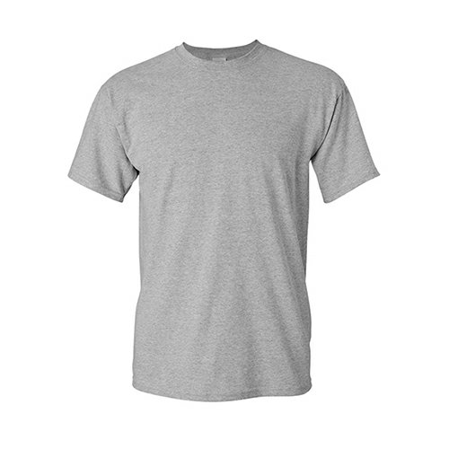
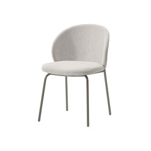

Image:

This is the predicted output on Google Lens:
T-shirt
This is the output on Mobilenet: jersey, T-shirt, tee shirt
Result - Mobilenet is more accurate.
Image:

This is the predicted output on Google Lens:
books
This is the output on Mobilenet: wallet, billfold, notecase, pocketbook
Result - Mobilenet is more accurate.
Image:
